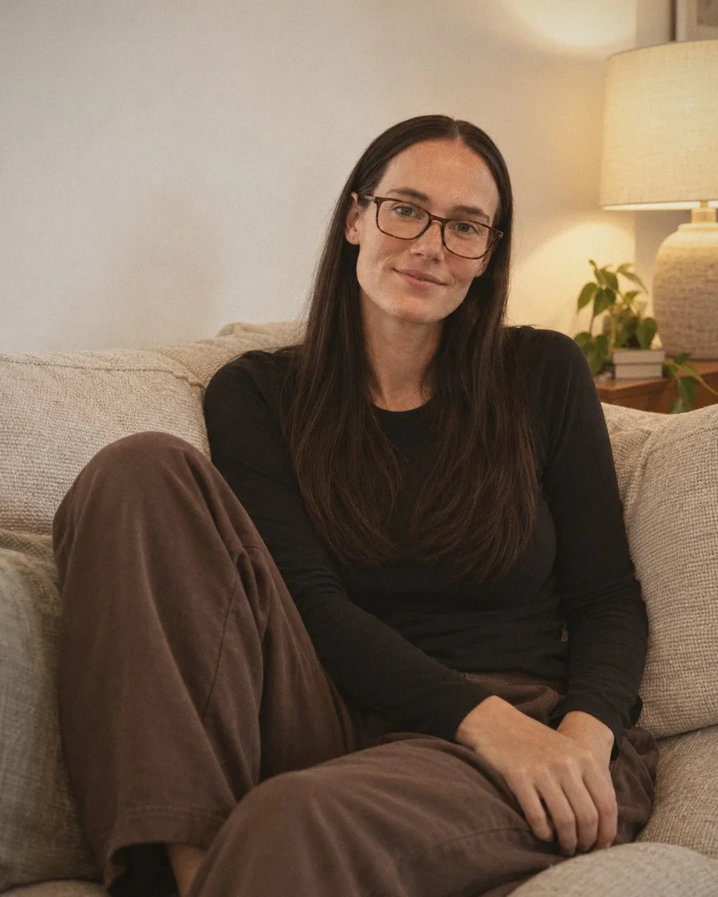

For couples who want to stay close · Online across Australia
Come back before things get hard.
Most couples only think of therapy when something breaks. A Tune Up is the opposite: a short, warm reconnection while things are good, so the small misses get caught before they harden. The couples who last are not the ones who never rupture; they are the ones who come back.

Why a Tune Up
You service the car before it breaks down. A relationship is no different.
We are taught to reach for help only in crisis, when the resentment has set, the distance is wide, and the work is long. But the couples who go the distance are not the ones who never drift. They are the ones who notice early, and come back for a small correction while it is still small.
A Tune Up is that small correction: a single, unhurried session to revisit the miss you are prone to, dust off the moves that break it, and name whatever has quietly shifted since. It is tending your relationship on purpose: the least dramatic, most underrated thing you can do for it.
A Tune Up, not a rescue
Reconnection you choose. Not repair in a crisis.
There is a particular relief in coming to therapy when nothing is on fire. No bracing, no big feelings to survive first. Just 75 minutes to turn towards each other on purpose, with someone who already knows how you love.
Desire and closeness are not things you fix once. They are things you tend, and tending is a skill, not a sign something is wrong.
Queer led, so there is no translating even now. Two of you or more than two; any orientation, gender, or structure. I pick up your language and your history from the first minute.
What a Tune Up moves through
Three small things, done on purpose.
Revisit the miss
We look at the loop you are most prone to (the reach that tends not to land) and check where it has been showing up lately, before it hardens into something bigger.
Refresh the moves
We dust off the few repair moves that work for you, tune them to where life is now, and add any that fit the season you are in.
Name what has shifted
New job, new baby, new city, new dynamic. We make room for what has changed, so your relationship gets to keep up with the two, or more, of you.
When a Tune Up fits
Good is worth keeping. Here is when to book one.
You have done the work before
We have worked together, things are steadier, and you want to keep it that way. A time to check in before old patterns quietly creep back.
You are good, and want to stay good
No crisis, no history with me needed. Just two people who would rather tend the relationship than wait for it to ask for attention.
A big change is coming
Moving in, a wedding, a baby, a transition, a new dynamic. A Tune Up right before helps you meet the change as a team.
It has been a while
Nothing is wrong, exactly. You have just drifted a little. One unhurried session gives you room to notice the drift and turn back towards each other.
However you love, you are welcome to come back as often, or as rarely, as your relationship needs.
The investment
Pick a rhythm that fits your life.
$190
75 minutes · online · book anytime, no history needed
For past clients, or any couple in a good place who wants to stay there.
- Once
A single Tune Up
One unhurried reconnection. Revisit your miss and refresh your moves.
- Most chosen
Seasonal Tune Ups
Roughly one a season, four across the year. Booked one at a time, nothing prepaid, and I send a gentle reminder when each is due.
- Once a year
The Annual Check Up
Your yearly relationship check up. Book it and forget the date. I remind you.
Private fee, GST free. Relationship therapy is not rebatable under Medicare. If your extras cover Accredited Mental Health Social Workers, your fund may pay a benefit for a couples session, so check with them first. Past clients are welcome back at the same rate. Prefer a different cadence? Just ask, and I will shape it around your life.
Honest answers
The questions couples ask me first.
Do we have to have seen you before?
How often should we come?
Is a Tune Up actual therapy, or just a chance to check in?
What if something bigger comes up in the session?
Is it online, and can we claim it?
Queer couples therapy near you
Whenever you are ready
Pull up a chair. Again.
No crisis required. Just 75 minutes to turn towards each other on purpose, with someone who already knows how you love.
Booking opens the secure client portal, part of Body Belonging Clinic, where your care is held. You make a quick login once, about two minutes.
Enquiries come straight to me, and I reply personally, usually within a day. Not sure a Tune Up is right? Start with a free 15 minute chat.